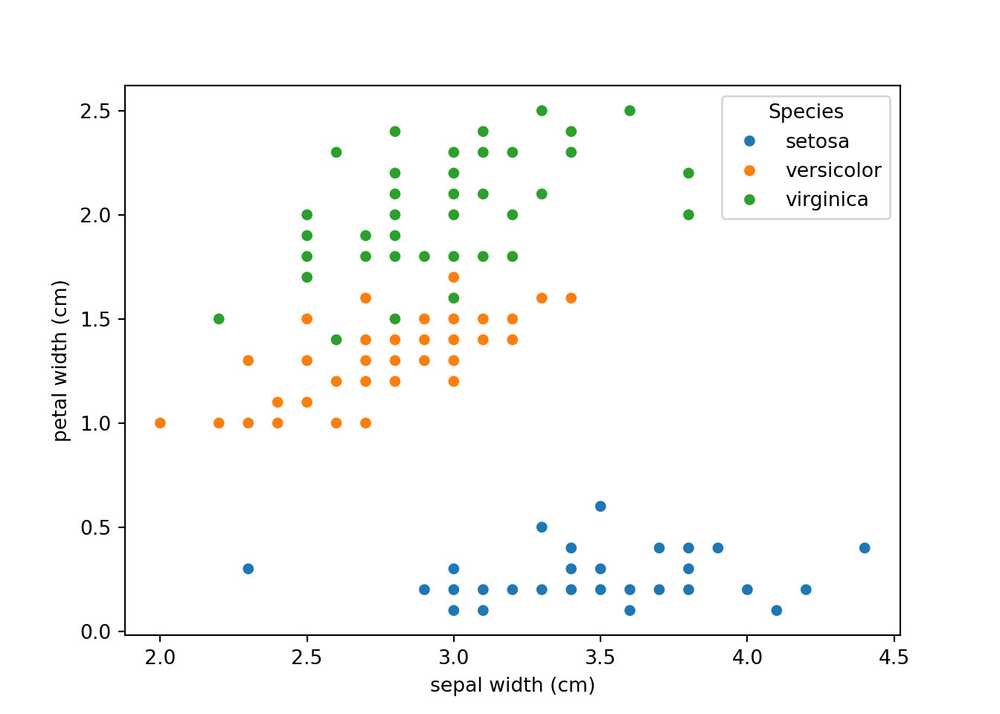
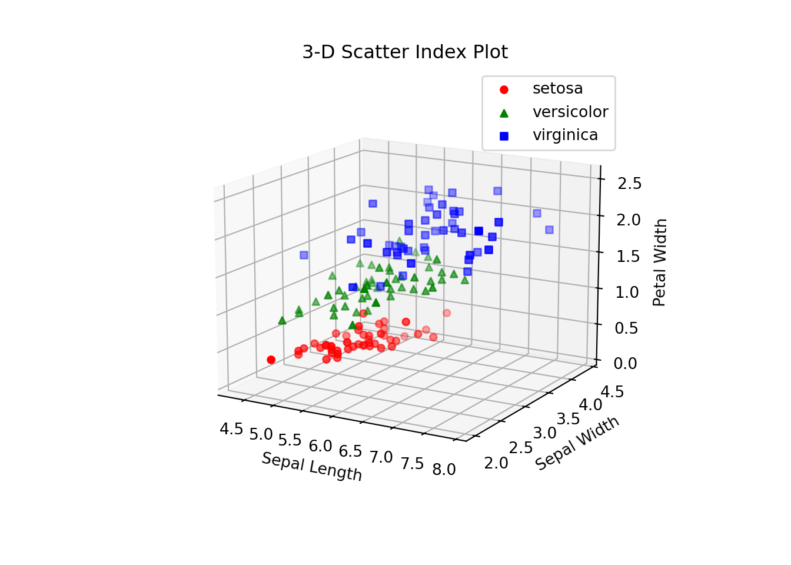
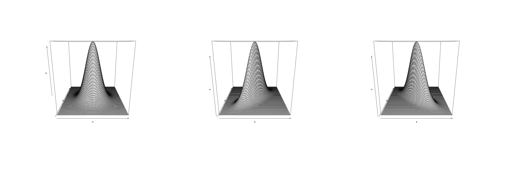
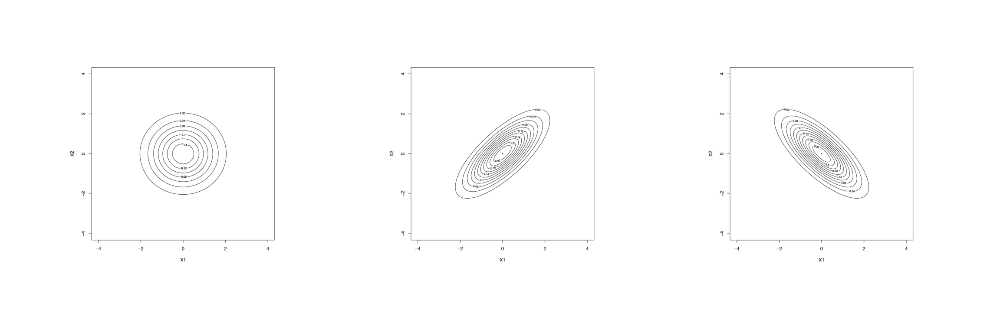

3 Displaying Multivariate Data and Measures of Distance
This note covers four main topics:
How to display multivariate data? We will introduce scatterplot, scatterplot matrix, growth curve, stars plot, and Chernoff faces;
How to measure the distance between multivariate observations? Manhattan distance, Euclidean distance, Mahalanobis distance, Hamming distance will be covered;
Multivariate normal distribution. We focus on bivariate normal in this course;
Sampling distribution of the sample mean vector \(\mathbf{\bar X}\) and the sample covariance matrix \(\mathbf{S}\).
Learning Outcomes
After finishing this chapter, students should be able to
Plot the index scatter plots matrix, draw a stars plot and Chernoff faces plot of a given multivariate data set using R, and interpret the plots.
Verify whether a distance function is valid.
Choose the proper distance metric to calculate the distance between observations based on the data types for multivariate data.
Write down the density function of a multivariate normal distribution.
Describe the properties of a multivariate normal distribution.
Find a \((1-\alpha)\times 100\%\) contour for a given bivariate normal distribution.
Explain the distributions related to the sample mean vector and sample covariance matrix.
3.1 Display Multivariate Data
In multivariate analysis, at least two measurements are taken from the same individuals. Before conducting any data analysis, we should examine the preliminary relationship among the data using graphs. We will cover several popular ways to display multivariate data.
3.1.1 Scatterplot
We have seen the 2-dimensional scatter plot in Stat 151 or 141 when two measurements are taken on the same individuals, for example, the age and price of a used car. In a scatter plot, we put one variable in the \(x\)-axis and another one in the \(y\)-axis. From a scatter plot, we can tell the direction, form and strength of the relationship between the two variables. If three measurements are taken from each individual, a 3-dimensional scatter plot can be used with one variable on the \(x\), \(y\), \(z\) axis respectively.
Take the Iris flowers data for example, a 2-dimensional scatter plot based on \(\verb`sepal width`\) and \(\verb`petal width`\) and a 3-dimensional scatter plot bases on \(\verb`sepal width`\), \(\verb`petal width`\) and \(\verb`sepal length`\) are given below. Different symbols are used for three different species: red circle for Setosa, green triangle for Versicolor, and blue square for Virginica. A plot with different symbols for distinct groups is called an index plot.


If there are more than 3 measurements, a matrix of scatter plots is used to explore the relationship between any two variables. Figure 1 shows the scatter plots matrix for the Iris flowers data. The scatter plots suggest that the variable \(\verb`petal width`\) might be a useful variable which separates the three species.
Figure 3.1: Scatter Plot Matrix of Iris Data
Figure 3.1: Scatter Plot Matrix of Iris Data
3.1.2 Graphs of Growth Curves
When the height of a child is measured at each birthday, the points can be plotted and connected by lines to produce a graph. This is an example of growth curve which is widely used for repeated measurements of the same characteristic on the same individuals at different visits. Figure 3.2 shows the reading ability of six kids at two different ages. Each individual measured twice; therefore, the measurements are repeated measurements. If this information is ignored, a scatter plot of \(\verb`reading ability`\) versus \(\verb`age`\) (left panel) suggests a negative association; that means reading ability drops when the kids get older, this is intuitively not true. The growth curve connects the two measurements on the same kids and it shows a positive association, that is reading ability grows when the kids get older.
## (np.float64(-0.5), np.float64(1023.5), np.float64(720.5), np.float64(-0.5))Figure 3.2: Growth curves of kid’s reading ability at two different ages
3.1.3 Star Plots
A star plot (or called radar chart) is a plot that consists of a sequence of equi-angular rays, with each ray representing one of the variables. The data length of a ray is proportional to the magnitude of the variable for the data point relative to the maximum magnitude of the variable across all data points. A line is drawn connecting the data values for each ray. This gives the plot a star-like appearance and the origin of one of the popular names for this plot. The star plot can be used to answer the following questions:
- Which observations are most similar? Are there clusters of observations?
- Are there outliers?
- What is the trend of change along time for repeated measurements?
Figure @(fig:star1) is the stars plot of 36 randomly picked iris flowers, 12 from each species. The numbers under the stars plot are the ID number of the flower, we know that observations 1 to 50 belong to Setosa, 51 to 100 belong to Versicolor and 101 to 150 belong to Virginica. Could you tell how many clusters of flowers?
## (np.float64(-0.5), np.float64(1023.5), np.float64(1023.5), np.float64(-0.5))Figure 3.3: Stars plot of 36 observations of the Iris flowers data
data = load_iris(as_frame=True)
df = data.frame
df['Species'] = data.target
np.random.seed(4061)
ind = np.sort(np.concatenate([
np.random.choice(range(0, 50), 12, replace=False),
np.random.choice(range(50, 100), 12, replace=False),
np.random.choice(range(100, 150), 12, replace=False)
]))
df_sample = df.iloc[ind, :-1] # dropping species
# normalizing
df_norm = (df_sample - df_sample.min()) / (df_sample.max() - df_sample.min())
labels = df_sample.columns
num_vars = len(labels)
angles = np.linspace(0, 2 * np.pi, num_vars, endpoint=False).tolist()
angles += angles[:1]
fig, axs = plt.subplots(6, 6, figsize=(12, 8), subplot_kw=dict(polar=True))
axs = axs.flatten()
for i, (ax, row) in enumerate(zip(axs, df_norm.values)):
values = row.tolist() + [row[0]] # close the polygon
ax.plot(angles, values, color='black', linewidth=0.5)
ax.fill(angles, values, color='black', alpha=0.1)
ax.set_xticks([])
ax.set_yticks([])
ax.set_ylim(0, 1)
ax.set_title(str(ind[i]), fontsize=8, pad=2)
for j in range(len(df_norm), len(axs)):
fig.delaxes(axs[j])
plt.show()
plt.tight_layout()
plt.close()3.1.4 Chernoff Faces Plot
Chernoff faces, proposed by Herman Chernoff, is a novel method of representing multivariate data by a cartoon of a face whose features, such as length of nose and curvature of mouth, correspond to the variables. Thus each multivariate observation is visualized as a computer-drawn face. The implementation of Chernoff faces plot in R is able to take up to 15 variables, those variables correspond to the features of the face such as: height of face, width of face, structure of face, height of mouth, width of mouth, smiling, height of eyes, width of eyes, height of hair, width of hair, style of hair, height of nose, width of nose, width of ear, height of ear.
Similar to stars plot, Chernoff faces are useful for identifying different groups (clusters) and showing changes over time for repeated measurements. Figure 3.4 shows the faces of 36 randomly picked iris flowers, 12 from each species. The 15 features of the faces correspond to sepal length, sepal width, petal length, petal width in cycles.
## (np.float64(-0.5), np.float64(1023.5), np.float64(1023.5), np.float64(-0.5))Figure 3.4: Chernoff face plots of 36 observations of the Iris flowers data
data = load_iris(as_frame=True)
df = data.frame
np.random.seed(4061)
ind = np.sort(np.concatenate([
np.random.choice(range(0, 50), 12, replace=False),
np.random.choice(range(50, 100), 12, replace=False),
np.random.choice(range(100, 150), 12, replace=False)
]))
df_sample = df.iloc[ind, :4] # 4 features - excluding species
# normalizing
df_norm = (df_sample - df_sample.min()) / (df_sample.max() - df_sample.min())
# Simple face plot function (MANUAL)
def draw_face(ax, features):
eye_size = 0.02 + 0.08 * features[0]
mouth_curve = -0.5 + features[1]
face_width = 0.3 + 0.3 * features[2]
eyebrow_angle = features[3]
# Head
head = plt.Circle((0, 0), 1, color='black', fill=False)
ax.add_artist(head)
# Eyes
ax.plot([-0.5, 0.5], [0.5, 0.5], 'ko', markersize=eye_size * 50)
# Mouth
x = np.linspace(-0.5, 0.5, 100)
y = mouth_curve * (x**2 - 0.25)
ax.plot(x, y - 0.5, 'k')
# Eyebrows
ax.plot([-0.6, -0.4], [0.7, 0.7 + 0.2 * (eyebrow_angle - 0.5)], 'k')
ax.plot([0.4, 0.6], [0.7 + 0.2 * (eyebrow_angle - 0.5), 0.7], 'k')
ax.set_xlim(-1.2, 1.2)
ax.set_ylim(-1.2, 1.2)
ax.axis('off')
fig, axs = plt.subplots(6, 6, figsize=(12, 10))
axs = axs.flatten()
for i, ax in enumerate(axs):
draw_face(ax, df_norm.iloc[i].values)
ax.set_title(str(ind[i]), fontsize=8)
plt.tight_layout()
plt.subplots_adjust(top=0.93)
plt.show()
plt.close()3.2 Distance in Multivariate Analysis
In multivariate analysis, most methods are based on the simple concept of distance. Take clustering analysis for example, we need to group observations that are similar or close to one another. Therefore, we need to calculate the distance between the observations.
3.2.1 Distances for Quantitative Variables
In univariate cases, the distance between two observations \(x_1\) and \(x_2\) is defined as \(d(x_1,x_2)=|x_1-x_2|=\sqrt{(x_1-x_2)^2}\). This definition can be extended to the multivariate cases. Suppose \(\mathbf{x}=[x_1, x_2, \cdots, x_n]^{T}\) and \(\mathbf{y}=[y_1, y_2, \cdots, y_n]^{T}\) are two vectors, their Euclidean distance is defined as \[ d(\mathbf{x}, \mathbf{y})=\sqrt{(x_1-y_1)^2+(x_2-y_2)^2+\cdots+(x_n-y_n)^2}=\sqrt{(\mathbf{x}-\mathbf{y})^{T}(\mathbf{x}-\mathbf{y})}. \] And the Manhattan distance is defined as \[ d(\mathbf{x}, \mathbf{y})=|x_1-y_1|+|x_2-y_2|+\cdots+|x_n-y_n|=\sum_{i=1}^n |x_i-y_i|. \]
The Minkowski distance is defined as \[ d(\mathbf{x}, \mathbf{y})=\left(\sum_{i=1}^n |x_i-y_i|^p\right)^{1/p}, \] which includes the Manhattan distance (when \(p=1\)) and the Euclidean distance (when \(p=2\)) as special cases.
Euclidean distance treats each coordinate equally without accounting for the amount of variability in each dimension. A measure that does take into account the variance and covariance of the variables is the Mahalanobis distance \[ d(\mathbf{x}, \mathbf{y})=\sqrt{(\mathbf{x}-\mathbf{y})^{T}\mathbf{\Sigma}^{-1}(\mathbf{x}-\mathbf{y})} \] where \(\mathbf{\Sigma}\) is the variance-covariance matrix which can be replaced by the sample variance-covariance matrix if it is unknown.
One can define his own way to calculate distance as long as the function \(d(.)\) satisfies the following properties:
- Non-negative. For any \(\mathbf{x}\) and \(\mathbf{y}\), \(d(\mathbf{x}, \mathbf{y})\ge 0\).
- Identified. \(d(\mathbf{x}, \mathbf{x})= 0\). For any \(\mathbf{x}\ne \mathbf{y}\), \(d(\mathbf{x}, \mathbf{y})> 0\); if \(\mathbf{x}=\mathbf{y}\), \(d(\mathbf{x}, \mathbf{y})=0\)
- Symmetric. \(d(\mathbf{x}, \mathbf{y})=d(\mathbf{y}, \mathbf{x})\).
- Definite. If \(d(\mathbf{x}, \mathbf{y})=0\), then \(\mathbf{x}=\mathbf{y}\).
- Triangle inequality. For any \(\mathbf{x}\ne \mathbf{y}, \mathbf{z}\), \(d(\mathbf{x}, \mathbf{y})\le d(\mathbf{x}, \mathbf{z})+d(\mathbf{z}, \mathbf{y})\).
Note: If a ‘’unit change’’ means dramatically different things for different variables, we shall standardize the measurements by subtracting its mean and dividing its standard deviation before we calculate the distance.
Example: Verify that the Euclidean distance is a valid distance merit.
3.2.2 Distance for Categorical Variables
For categorical variables whose values are categories, it is meaningless to calculate the distance using the functions given in the previous section. For example, there are four possible blood types: A, B, O, AB. Even though we can recode the values as 1=A, 2=B, 3=O and 4=AB, we would not say that the distance between types A and B is closer than the distance between types A and O. For categorical measurements, we can use the Hamming distance \[ d(\mathbf{x}, \mathbf{y})=\sum_{i=1}^p \mbox{I}(x_i\ne y_i), \] where I(.) is an indicator function which takes the value 1 if the statement is true otherwise 0. Hamming distance between two observations counts the number of not-matched measurements. For example,
\[ \begin{array}{c|cc} \hline &\text{Gender}&\text{Employment Status}\\ \hline Kate&F&\text{employed}\\ John&M&\text{unemployed}\\ Adam&M&\text{employed}\\ \hline \end{array} \]
The Hamming distance between Kate and John is 2 and between Kate and Adam is 1. One can also standardize the Hamming distance by dividing the number of categorical variables. That is \[ d(\mathbf{x}, \mathbf{y})=\frac{\sum_{i=1}^p \mbox{I}(x_i\ne y_i)}{p}. \]
One special categorical variable is the binary variable which takes only two possible values: 0 (a certain attribute absent) or 1(a certain attribute present). A binary variable is called asymmetric if one of the two states (e.g. state “0”) is interpreted as more informative than the other state. For example, Married (1) or Not Married (0); not married can be single, divorced or widowed. If both observations have value ‘’0’’, we can not say if they are the same or different. Therefore, for asymmetric binary variable, the distance can be calculated as \[ d(\mathbf{x}, \mathbf{y})=\frac{\sum_{i=1}^p \mbox{I}(x_i\ne y_i)}{p-\mbox{# of 0-0 pairs} } \] this is also called the Jaccard coefficient.
3.2.3 Distance for Mixed Variable Types
When the multivariate measurements are mixed of quantitative and categorical data, Gower’s coefficient can be calculated to measure the distance between two observations: \[ d(\mathbf{x_i}, \mathbf{x_j})=\frac{\sum_{k=1}^p \delta_{ijk}d_{ijk}}{\sum_{k=1}^p \delta_{ijk}} \] where \[ \delta_{ijk}=\left\{ \begin{array}{ll} 1&\mbox{if we could use the variable $k$ to compare observations $i$ and $j$},\\ 0&\mbox{if we could not tell whether observations $i$ and $j$ are the same or not using variable $k$}. \end{array} \right. \] and \[ d_{ijk}=\left\{ \begin{array}{ll} \frac{|x_{ik}-x_{jk}|}{\mbox{range of variable $k$}} &\mbox{for quantitative variables},\\ \mbox{I}(x_{ik}\ne x_{jk})&\mbox{for categorical variables}. \end{array} \right. \]
To summarize, \(\delta_{ijk}=0\) for only 0-0 pairs of asymmetric binary variables.
Example: Gower’s Coefficient
Find the Gower’s coefficients for the following three individuals:
\[\begin{array}{c|ccccc} \hline &$\text{Gender}$&$\text{Hair}$ $\text{Color}$& $\text{Asian}$&$\text{Height}$&$\text{Weight}$\\ \hline $\text{Kate}$&$\text{F}$&$\text{Brown}$&$\text{Yes}$&$\text{60}$&80\\ John&M&Grey&No&50&60\\ Adam&M&Brown&No&70&90\\ \hline \end{array}\]Among the categorical variables ‘’Gender’‘,’‘Hair color’‘,’‘Asian’‘,’‘Asian’’ is asymmetric binary. We can construct a working table to find the distance between the observations.
# import gower
#
# df = pd.DataFrame({
# 'Gender': ['F', 'M', 'M'],
# 'HairColor': ['Brown', 'Grey', 'Brown'],
# 'Asian': [1, 0, 0], # asymmetric binary
# 'Height': [60, 50, 70],
# 'Weight': [80, 60, 90]
# }, index=['Kate', 'John', 'Adam'])
#
# df['Gender'] = df['Gender'].astype('category')
# df['HairColor'] = df['HairColor'].astype('category')
#
# gower_dist = gower.gower_matrix(df)
#
# print("Dissimilarities:")
# for i in range(len(df)):
# for j in range(i + 1, len(df)):
# print(f"{df.index[i]} vs {df.index[j]}: {gower_dist[i][j]:.6f}")
#
# types = []
# for col in df.columns:
# if isinstance(df[col].dtype, pd.CategoricalDtype):
# types.append('N') # Nominal
# elif set(df[col].unique()).issubset({0, 1}) and col.lower() == 'asian':
# types.append('A') # Asymmetric binary
# else:
# types.append('I') # Interval
#
# print("\nMetric : mixed")
# print(f"Types : {' , '.join(types)}")
# print(f"Number of objects : {len(df)}")If we were told the range of height is 30 and the range of weight is 50 instead, we can create a fake observation to tell \(\textsf{R}\) the information. For the previous example, we need to create a new observation with height=80 and weight=110, so the range of height is 80-50=30 and range for weight is 110-60=50. For the computer output, just ignore the distance between everyone to the fake person.
#
# hair_color = df['HairColor'].cat.add_categories('Black')
#
# fake = pd.DataFrame({
# 'Gender': pd.Categorical(['F'], categories=df['Gender'].cat.categories),
# 'HairColor': pd.Categorical(['Black'], categories=hair_color.categories),
# 'Asian': [1],
# 'Height': [80],
# 'Weight': [110]
# }, index=['Fake'])
#
#
# # Combine with real data
# df1 = pd.concat([df, fake])
#
# gower_dist = gower.gower_matrix(df1)
#
# print("Dissimilarities:")
# n = len(df)
# for i in range(n):
# for j in range(i + 1, n):
# print(f"{df1.index[i]} vs {df1.index[j]}: {gower_dist[i][j]:.6f}")
#
# types = []
# for col in df1.columns:
# if isinstance(df1[col].dtype, pd.CategoricalDtype):
# types.append('N') # Nominal
# elif set(df1[col].unique()).issubset({0, 1}) and col.lower() == 'asian':
# types.append('A') # Asymmetric binary
# else:
# types.append('I') # Interval
#
# print("\nMetric : mixed")
# print(f"Types : {' , '.join(types)}")
# print(f"Number of objects : {n}")3.3 Multivariate Normal Distribution
Most of the inferential statistical methods, such as \(t\) tests, one-way ANOVA, are based on the normality assumption in univariate analysis. Similarly, some multivariate analysis techniques are based on the assumption that the data are from a multivariate normal distribution.
The univariate density function of normal distribution with mean \(\mu\) and standard deviation \(\sigma\) is \[\begin{equation} f(x)=\frac{1}{\sqrt{2\pi}\sigma}e^{-\frac{(x-\mu)^2}{2\sigma^2}}, -\infty<x<\infty \tag{3.1} \end{equation}\]
The term \[ \left(\frac{x-\mu}{\sigma}\right)^2=(x-\mu)(\sigma^2)^{-1}(x-\mu) \] in the exponent of the univariate normal density function measures the squared distance between \(x\) and \(\mu\) in standard deviation units. This can be generalized in vectors for multivariate cases as \[ (\mathbf{x}-\mathbf{\mu})^{T}\mathbf{\Sigma}^{-1} (\mathbf{x}-\mathbf{\mu}) \] where \(\mathbf{\mu}\) and \(\mathbf{\Sigma}\) are the mean vector and variance-covariance matrix. It can be shown that the \(p\)-dimensional multivariate normal density function is \[\begin{equation} f(\mathbf{x})=\frac{1}{(2\pi)^{p/2}|\mathbf{\Sigma}|^{1/2}}\exp \left\{-\frac{(\mathbf{x}-\mathbf{\mu})^{T}\mathbf{\Sigma}^{-1} (\mathbf{x}-\mathbf{\mu})}{2}\right\}. \tag{3.2} \end{equation}\]
As the constant \(\frac{1}{\sqrt{2\pi}\sigma}\) is the normalizing constant such that the area under the density curve given in Equation (3.1) is 1, the constant \(\frac{1}{(2\pi)^{p/2}|\mathbf{\Sigma}|^{1/2}}\) is the normalizing constant ensuring that the volume under the surface defined in Equation (3.2) is 1.
3.3.1 Properties of Multivariate Normal Distribution
Suppose that the joint distribution of random variables \(X_1, X_2, \cdots, X_p\) is a multivariate normal with mean vector \(\boldsymbol{\mu}\) and variance-covariance matrix \(\boldsymbol{\Sigma}\), then we have the following results.
- The marginal distribution of \(X_i\) is \(N(\mu_i, \sqrt{\sigma_{ii}})\).
- For any pair of \(X_i, X_j\), they are independent if and only if \(Cov(X_i, X_j)=0\).
- Any linear combination of \(X_i\), \(\mathbf{c}^{T}\mathbf{X}=c_1X_1+c_2X_2+\cdots+c_pX_p\) is distributed as \(N(\mathbf{c}^{T}\boldsymbol{\mu}, \boldsymbol{c}^{T}\boldsymbol{\Sigma}\mathbf{c})\).
- All points with the same distance to the mean \(\boldsymbol{\mu}\) form a contour of the multivariate normal distribution. Contours for the \(p\)-dimensional normal distribution are ellipsoids defined by \(\mathbf{x}\) such that \[ (\mathbf{x}-\boldsymbol{\mu})^{T}\mathbf{\Sigma}^{-1} (\mathbf{x}-\boldsymbol{\mu})=c^2. \] These ellipsoids are centered at \(\boldsymbol{\mu}\) and have axes \(\pm c\sqrt{\lambda_i}\mathbf{e}_i\), where \(\lambda_i\) and \(\mathbf{e}_i\) are the eigenvalues and corresponding unit eigenvectors of the variance-covariance matrix \(\mathbf{\Sigma}\). If \(|\boldsymbol{\Sigma}|>0\), that is covariance matrix \(\boldsymbol{\Sigma}\) is positive definite, then \((\mathbf{x}-\boldsymbol{\mu})^{T}\mathbf{\Sigma}^{-1} (\mathbf{x}-\boldsymbol{\mu})\) is distributed as \(\chi^2_p\), a chi-square with degrees of freedom \(p\). The multivariate normal distribution \(N(\boldsymbol{\mu}, \boldsymbol{\Sigma})\) assigns probability \((1-\alpha)\) to the solid ellipsoid \(\{(\mathbf{x}-\boldsymbol{\mu})^{T}\mathbf{\Sigma}^{-1} (\mathbf{x}-\boldsymbol{\mu})\le \chi^2_p(\alpha)\}\), where \(\chi^2_p(\alpha)\) is the upper (\(100\alpha\))th percentile of the \(\chi^2_p\) distribution.
3.3.2 Bivariate Normal Distribution
It can be shown that when \(p=2\), we have the bivariate normal density \[\begin{equation} \tiny f(x_1, x_2)=\frac{1}{2\pi\sqrt{\sigma_{11}\sigma_{22}(1-\rho_{12}^2)}}\exp\left\{-\frac{1}{2(1-\rho_{12}^2)}\left[\left(\frac{x_1-\mu_1}{\sqrt{\sigma_{11}}}\right)^2+\left(\frac{x_2-\mu_2}{\sqrt{\sigma_{22}}}\right)^2-2\rho_{12}\left(\frac{x_1-\mu_1}{\sqrt{\sigma_{11}}}\right)\left(\frac{x_2-\mu_2}{\sqrt{\sigma_{22}}}\right)\right]\right\} \tag{3.3} \end{equation}\] where \(\mu_1=E(X_1), \mu_2=E(X_2), \sigma_{11}=Var(X_1), \sigma_{22}=Var(X_2), \rho_{12}=\frac{\sigma_{12}}{\sqrt{\sigma_{11}\sigma_{22}}}.\)
Example: Bivariate Normal Distribution
If \(X_1\sim N(\mu_1, \sigma_1), X_2\sim N(\mu_2, \sigma_2)\), and they are independent.
Find the joint density of \(X_1\) and \(X_2\).
Find the joint density of \(X_1\) and \(X_2\) using the matrix form.
How about if \(X_1\) and \(X_2\) and not independent and with correlation \(\rho\)?
Example: Surface and Contour Plot of Bivariate Normal
Consider the bivariate normal distributions with the following mean vectors and covariance matrices: \[ \boldsymbol{\mu_1}=\boldsymbol{\mu_2}=\boldsymbol{\mu_3}=\left[ \begin{array}{c} 0\\ 0 \end{array} \right] ,\quad \boldsymbol{\Sigma_1}=\left[ \begin{array}{cc} 1&0\\ 0&1 \end{array} \right], \quad \boldsymbol{\Sigma_2}=\left[ \begin{array}{cc} 1&0.75\\ 0.75&1 \end{array} \right], \quad \boldsymbol{\Sigma_3}=\left[ \begin{array}{cc} 1&-0.75\\ -0.75&1 \end{array} \right]. \] The distributions (surface plots) of the three bivariate normal are shown in the first row of Figure ?? and their corresponding contour plots are shown in the second row. The values on the contour paths are the value of density \(f(x_1, x_2)\) given in Equation (3.3).
## <matplotlib.image.AxesImage object at 0x2896c56d0>
## (np.float64(-0.5), np.float64(790.5), np.float64(1023.5), np.float64(-0.5))
## <matplotlib.image.AxesImage object at 0x2896c5810>
## (np.float64(-0.5), np.float64(790.5), np.float64(1023.5), np.float64(-0.5))
## <matplotlib.image.AxesImage object at 0x2896c5950>
## (np.float64(-0.5), np.float64(790.5), np.float64(1023.5), np.float64(-0.5))
## <matplotlib.image.AxesImage object at 0x292b43110>
## (np.float64(-0.5), np.float64(790.5), np.float64(1023.5), np.float64(-0.5))
## <matplotlib.image.AxesImage object at 0x292b43250>
## (np.float64(-0.5), np.float64(790.5), np.float64(1023.5), np.float64(-0.5))
## <matplotlib.image.AxesImage object at 0x292b43390>
## (np.float64(-0.5), np.float64(790.5), np.float64(1023.5), np.float64(-0.5))
3.3.3 Contour of Multivariate Normal Distribution
Definition
Contour at level \(c_0^2\) is the collection of all points of \(\mathbf{x}\) such that \(f(\mathbf{x})=c_0^2\). Since \[ f(\mathbf{x})=\frac{1}{(2\pi)^{p/2}|\boldsymbol{\Sigma}|^{1/2}}\exp \left\{-\frac{(\mathbf{x}-\boldsymbol{\mu})^{T}\boldsymbol{\Sigma}^{-1} (\mathbf{x}-\boldsymbol{\mu})}{2}\right\}=c_0^2 \Longrightarrow (\mathbf{x}-\boldsymbol{\mu})^{T}\boldsymbol{\Sigma}^{-1} (\mathbf{x}-\boldsymbol{\mu})=c^2 \] a \((1-\alpha)\times 100\%\) contour is the collection of points \(\mathbf{x}\) such that \[ P((\mathbf{x}-\boldsymbol{\mu})^{T}\boldsymbol{\Sigma}^{-1} (\mathbf{x}-\boldsymbol{\mu})\le c^2)=1-\alpha. \] Since \((\mathbf{x}-\boldsymbol{\mu})^{T}\boldsymbol{\Sigma}^{-1} (\mathbf{x}-\boldsymbol{\mu})\sim \chi^2_{p}\), we get \(c^2=\chi^2_{p, \alpha}\). For example, a 95% contour for a bivariate normal distribution is the collection of all points \(\mathbf{x}\) such that \[ (\mathbf{x}-\boldsymbol{\mu})^{T}\boldsymbol{\Sigma}^{-1} (\mathbf{x}-\boldsymbol{\mu})\le \chi^2_{2, 0.05}=5.991 \]
Example: Contour of Multivariate Normal Distribution
- Suppose \[\boldsymbol{\mu}=\left[ \begin{array}{c} 0\\ 0 \end{array} \right] ,\quad \boldsymbol{\Sigma}=\left[ \begin{array}{cc} 1&0\\ 0&1 \end{array} \right]\], find a 95% contour for the bivariate normal distribution. For bivariate normal distribution, a 95% contour is \[ (\mathbf{x}-\boldsymbol{\mu})^{T}\boldsymbol{\Sigma}^{-1} (\mathbf{x}-\boldsymbol{\mu})=5.991 \]
\[ \Longrightarrow \left[ \begin{array}{cc} x_1, x_2 \end{array} \right] \left[ \begin{array}{cc} 1&0\\ 0&1 \end{array} \right] \left[ \begin{array}{c} x_1\\ x_2 \end{array} \right]=x_1^2+x_2^2=5.991 \] which is a circle with radius \(r=\sqrt{5.991}\).
- Suppose \(\boldsymbol{\mu}=\left[ \begin{array}{c} 0\\ 0 \end{array} \right] ,\quad \boldsymbol{\Sigma}=\left[ \begin{array}{cc} 1&0\\ 0&4 \end{array} \right]\), find a 95% contour for the bivariate normal distribution. For bivariate normal distribution, a 95% contour is \[ (\mathbf{x}-\boldsymbol{\mu})^{T}\boldsymbol{\Sigma}^{-1} (\mathbf{x}-\boldsymbol{\mu})=5.991 \Longrightarrow \hspace{10cm} \]
- Suppose \[\boldsymbol{\mu}=\left[ \begin{array}{c} 0\\ 0 \end{array} \right] ,\quad \boldsymbol{\Sigma}=\left[ \begin{array}{cc} 1&\frac{3}{4}\\ \frac{3}{4}&1 \end{array} \right]\], find a 95% contour for the bivariate normal distribution. For bivariate normal distribution, a 95% contour is \[ (\mathbf{x}-\boldsymbol{\mu})^{T}\boldsymbol{\Sigma}^{-1} (\mathbf{x}-\boldsymbol{\mu})=5.991 \Longrightarrow \]
\[ \left[ \begin{array}{cc} x_1, x_2 \end{array} \right] \frac{\left[ \begin{array}{cc} 1&-\frac{3}{4}\\ -\frac{3}{4}&1 \end{array} \right]}{1-\frac{9}{16}} \left[ \begin{array}{c} x_1\\ x_2 \end{array} \right] \]
\[=\frac{16}{7\times 5.991}x_1^2-\frac{24}{7\times 5.991}x_1x_2+\frac{16}{7\times 5.991}x_2^2=1 \] which is an ellipse center \((0, 0)\) with axes \(\pm \frac{\sqrt{5.991\times 7}}{2}\) and \(\pm \frac{\sqrt{5.991}}{2}\) and rotating counterclockwise 45 degrees.
Side-note: The generate form of a rotated counterclockwise about the origin through an angle \(\theta\) with axes \(\pm a\) and \(\pm b\) is \[ x^2\left(\frac{\cos^2\theta}{a^2}+\frac{\sin^2\theta}{b^2}\right)+2xy\left(\frac{\cos \theta \sin \theta}{a^2}-\frac{\cos \theta \sin \theta}{b^2}\right)+y^2\left(\frac{\sin^2 \theta}{a^2}+\frac{\cos^2 \theta}{b^2}\right)=1 \] To find the axes \(a^2\), \(b^2\) and the angle \(\theta\), solve for equations \[ \left\{ \begin{array}{l} \frac{\cos^2\theta}{a^2}+\frac{\sin^2\theta}{b^2}=\frac{16}{7\times 5.991} \\ \frac{\sin^2 \theta}{a^2}+\frac{\cos^2 \theta}{b^2}=\frac{16}{7\times 5.991} \\ \frac{\cos \theta \sin \theta}{a^2}-\frac{\cos \theta \sin \theta}{b^2}=-\frac{12}{7\times 5.991} \end{array} \right. \] The solutions are \(\theta=45, a^2=\frac{5.991\times 7}{4}, b^2=\frac{5.991}{4}\) or \(\theta=135, a^2=\frac{5.991}{4}, b^2=\frac{5.991\times 7}{4}\). They are the same ellipse.
Theorem
The contour \((\mathbf{x}-\boldsymbol{\mu})^{T}\boldsymbol{\Sigma}^{-1} (\mathbf{x}-\boldsymbol{\mu})\le c^2\) is an ellipsoids centered at \(\boldsymbol{\mu}\) and have axes \(\pm c\sqrt{\lambda_i}\mathbf{e}_i\), where \(\lambda_i\) and \(\mathbf{e}_i\) are the eigenvalues and corresponding unit eigenvectors of the variance-covariance matrix \(\boldsymbol{\Sigma}\).
We revisit the previous examples to apply the theorem.
Example: Find contour for the bivariate normal distribution by eigen-pairs of \(\boldsymbol{\Sigma}\)
- Suppose \[\boldsymbol{\mu}=\left[ \begin{array}{c} 0\\ 0 \end{array} \right] ,\quad \boldsymbol{\Sigma}=\left[ \begin{array}{cc} 1&0\\ 0&4 \end{array} \right]\], find a 95% contour for the bivariate normal distribution. The eigenvalues of \(\boldsymbol{\Sigma}\) are \[ |\mathbf{A}-\lambda \mathbf{I}|=\left| \begin{array}{cc} 1-\lambda& 0\\ 0& 4-\lambda \end{array} \right|=(1-\lambda)(4-\lambda)=0 \] which gives the eigenvalues are \(\lambda_1=4\) and \(\lambda_2=1\). For \(\lambda_1=4\), we have \[ \left[ \begin{array}{cc} 1& 0\\ 0& 4 \end{array} \right] \left[ \begin{array}{c} x_1\\x_2 \end{array} \right]=4\left[ \begin{array}{c} x_1\\x_2 \end{array} \right] \] which gives \(x_1=4x_1, 4x_2=4x_2\); therefore the eigenvector could be \[\mathbf{e_1}=\left[ \begin{array}{c} 0\\1 \end{array} \right] \] For \(\lambda_2=1\), the eigenvector could be \[ \mathbf{e_2}=\left[ \begin{array}{c} 1\\0 \end{array} \right] \]
The axes are \[\pm c\sqrt{\lambda_1}\mathbf{e}_1=\pm \sqrt{5.991} \sqrt{4} \left[ \begin{array}{c} 0\\1 \end{array} \right]=\pm\left[ \begin{array}{c} 0\\4.895 \end{array} \right] \] and \[\pm c\sqrt{\lambda_2}\mathbf{e}_2=\pm \sqrt{5.991} \sqrt{1} \left[ \begin{array}{c} 1\\0 \end{array} \right]=\pm\left[ \begin{array}{c} 2.448\\0 \end{array} \right] \]
- Suppose \[\boldsymbol{\mu}=\left[ \begin{array}{c} 0\\ 0 \end{array} \right] ,\quad \boldsymbol{\Sigma}=\left[ \begin{array}{cc} 1&\frac{3}{4}\\ \frac{3}{4}&1 \end{array} \right]\], find a 95% contour for the bivariate normal distribution.
3.4 The Sampling Distribution of \(\mathbf{\bar X}\) and \(\boldsymbol{S}\)
In the univariate case, the sample mean \(\bar X\) is an unbiased estimator of the population mean \(\mu\). Inferences on \(\mu\) is based on the sampling distribution of \(\bar X\). It is known that \(E(\bar X)=\mu, Var(\bar X)=\frac{\sigma^2}{n}\), where \(\sigma^2\) is the population variance. If population distribution is normal, \(\bar X\) is also normally distributed; if the population distribution is non-normal, by central limit theorem, when the sample size is large enough, \(\bar X\) is approximately normally distributed. As for the sample variance \(s^2\), we have \(\frac{(n-1)s^2}{\sigma^2}\sim \chi^2_{n-1}\). And \(\sum_{i=1}^n \frac{(x_i-\mu)^2}{\sigma^2}\sim \chi^2_n\). Before generalizing to multivariate cases, let’s review distributions related to normal for univariate variables.
3.4.3 Generalize to Multivariate Cases
Review the limit theorems covered in STAT 266. They are useful to prove convergency.
If \(X_n\stackrel{P}{\longrightarrow} a\) and \(Y_n\stackrel{P}{\longrightarrow} b\), then \(X_n\pm Y_n\stackrel{P}{\longrightarrow} a\pm b\).
If \(X_n\stackrel{P}{\longrightarrow} a\) and \(Y_n\stackrel{P}{\longrightarrow} b\), then \(X_n Y_n\stackrel{P}{\longrightarrow} a b\).
If \(X_n\stackrel{P}{\longrightarrow} X\) and \(a\) is a constant, then \(aX_n\stackrel{P}{\longrightarrow} aX\).
If \(X_n\stackrel{P}{\longrightarrow} a\) where \(a\) is a fixed constant and \(g\) is a real-valued function which is continuous at \(a\), then \(g(X_n)\stackrel{P}{\longrightarrow} g(a)\).
If \(X_n\stackrel{D}{\longrightarrow}a\) where \(a\) is a fixed constant and \(g\) is a real-valued function which is continuous at \(a\), then \(g(X_n)\stackrel{D}{\longrightarrow} g(a)\).
Slutsky theorem. If \(X_n\stackrel{P}{\longrightarrow} a\) and \(Y_n\stackrel{D}{\longrightarrow} Y\) then
- \(X_n+Y_n\stackrel{D}{\longrightarrow} a+Y\)
- \(X_nY_n\stackrel{D}{\longrightarrow}aY\)
- \(X_n^{-1}Y_n\stackrel{D}{\longrightarrow} a^{-1}Y\)
Here we generalize some of limiting distributions from univariate case to multivariate case:
\[ \small \begin{array}{c|c} \hline \text{Univariate Case} & \text{Multivariate Case} \\ \hline \sqrt{n}(\bar X-\mu) \stackrel{D}{\longrightarrow} N(0, \sigma^2) & \sqrt{n}(\mathbf{\bar X}-\boldsymbol{\mu}) \stackrel{D}{\longrightarrow} N(\mathbf{0}, \boldsymbol{\Sigma}) \\ n(\bar X-\mu)(\sigma^2)^{-1}(\bar X-\mu) \stackrel{D}{\longrightarrow} \chi^2_1 & n(\mathbf{\bar X}-\boldsymbol{\mu})^{T}\boldsymbol{\Sigma}^{-1}(\mathbf{\bar X}-\boldsymbol{\mu}) \stackrel{D}{\longrightarrow} \chi^2_p \\ n(\bar X-\mu)(S^2)^{-1}(\bar X-\mu) \stackrel{D}{\longrightarrow} \chi^2_1 \: \text{when $n$ is large enough} & n(\mathbf{\bar X}-\boldsymbol{\mu})^{T}\mathbf{S}^{-1}(\mathbf{\bar X}-\boldsymbol{\mu}) \stackrel{D}{\longrightarrow} \chi^2_p \: \text{when $(n-p)$ is large.} \end{array} \]
3.5 Review Exercises
- We consider the modified admission data set which contain 400 graduate school admissions decisions. There are five variables: admit/don’t admit to graduate school (1=admitted and 0=not admitted), GRE (Graduate Record Exam scores), GPA (grade point average), prestige of the undergraduate institution (values from 1 to 4 with 1 having the highest prestige), whether the undergraduate institution is in Ontario or not. Use the most proper distance metric to find the distance between the following three individuals:
\[ \begin{array}{ccccc} \hline Admit& GRE& GPA& Prestige& Ontario\\ \hline 0 &380& 3.61 & 3& Yes\\ 1& 660& 3.67 & 3& NO\\ 1& 800& 4.00 & 1& NO\\ \hline \end{array} \] Suppose the range of GRE is 580 and the range of GPA is 1.74.
- Consider a bivariate normal population with \(\mu_1=1, \mu_2=3, \sigma_{11}=2, \sigma_{22}=1, \rho_{12}=-0.8\).
- Write out the bivariate normal density.
- Write out the squared Mahalanobis distance \((\mathbf{x}-\boldsymbol{\mu})^{T}\mathbf{\Sigma}^{-1}(\mathbf{x}-\boldsymbol{\mu})\) as a function of \(x_1\) and \(x_2\).
- Determine and sketch the constant -density contour that contains 90% of the probability.
Revisit the Learning Outcomes
After finishing this note, students should be able to
- Plot the index scatter plots matrix, draw a stars plot and Chernoff faces plot of a given multivariate data set using R, and interpret the plots.
- Verify whether a distance function is valid.
- Choose the proper distance metric to calculate the distance between observations based on the data types for multivariate data.
- Write down the density function of a multivariate normal distribution.
- Describe the properties of a multivariate normal distribution.
- Find a \((1-\alpha)\times 100\%\) contour for a given bivariate normal distribution.
- Explain the distributions related to the sample mean vector and sample covariance matrix.